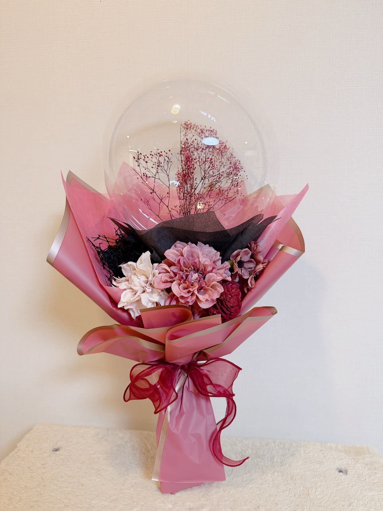
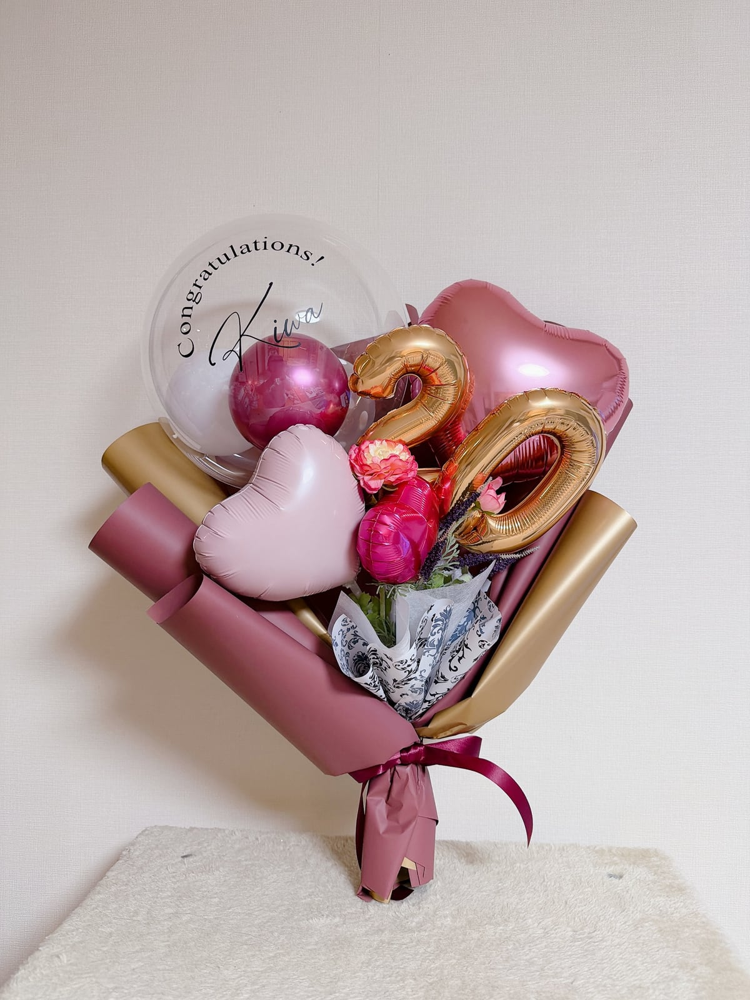
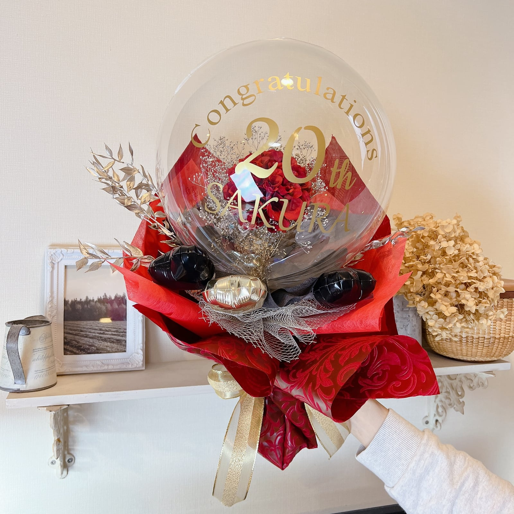
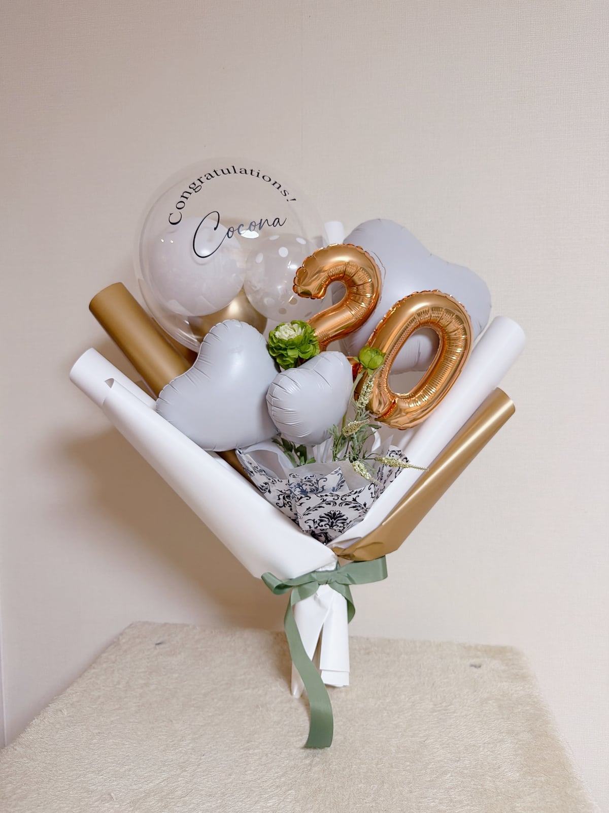
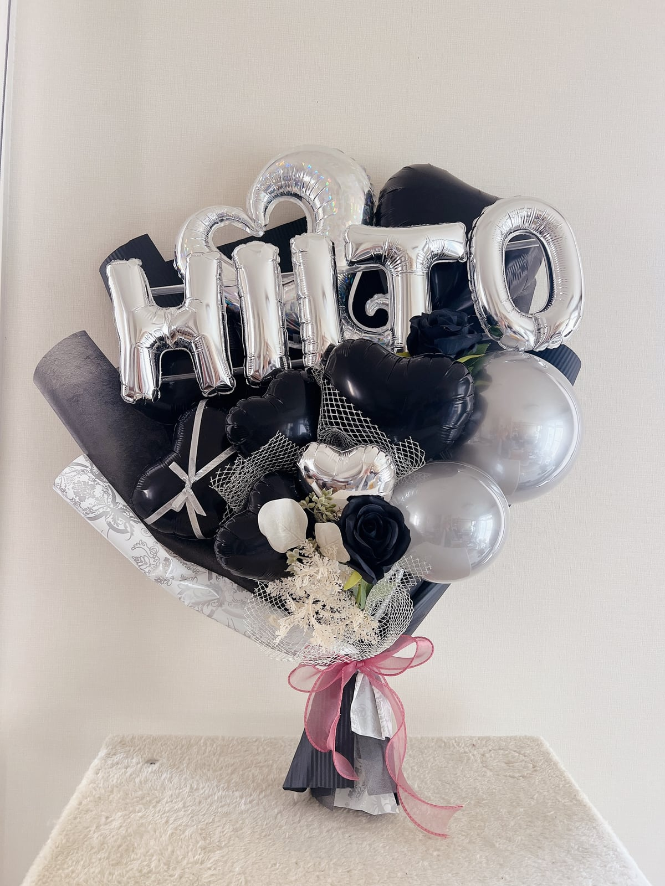

L-01
L-02
ふたりで持ちたい、から
おふたりで持ちたいので、とにかく大きく。色はおまかせ。ご依頼は、それだけでした。並べたときにお揃いに見えるよう、お名前の向きとハートの位置をそろえ、お花は同じ種類の色違いに。ぜんぶ同じにはせず、少しだけ違いを残しています。ラージブーケを初めてお作りした一組です。
今なら、もっと大きくも作れそうです。
※ふたりの写真の衣装と背景はイメージ加工です。成人式の、前撮り・当日・後撮りに
お写真とひとことで、つくり手が設計します。
前撮りがお済みの方も、当日と後撮りに、まだ間に合います。
和歌山市の小さなアトリエで、ひとつずつ手づくり。
和歌山市・岩出市・海南市のみなさまへ。

振袖が決まって、前撮りの日が近づいて。「手に、何か持ちたいね」となったとき、意外と迷うのがブーケです。
しおれない。柄を隠さない。当日まで同じ姿。その3つを、バルーンで。
3つの約束
トップの写真は、わが家の娘です。お友だちと色違いでつくったブーケを持って、成人式を迎えました。晴れ姿を見守る親の気持ちがわかるから、ご依頼ごとに、真心を込めてオーダーでおつくりします。
振袖・袴・スーツのお写真と、近い作品の番号やひとことから、色・形・文字までつくり手が設計します。迷ったら「おまかせで」でも大丈夫。
空気で仕上げるので日ごとにしぼまず、秋の前撮りから年明けの成人式まで同じ姿で持てます。
頼み方
迷ったら「おまかせで」のひとことでも大丈夫。色・形・文字まで、つくり手が設計します。
大きさ(お品書きの3つから)と入れたい文字は、LINEでいっしょに決めます。参考の作品は2点までを目安に。
たとえば、こんな雰囲気同じものではなく、あなたの一着に合わせて新しくつくります




※男性は、袴やスーツに合わせて黒・シルバー・ネイビーなども。2色の組み合わせもご相談ください。
制作例
ひとつずつお作りしてきた制作例です。気に入った雰囲気があれば、番号(M-12 など)をLINEで。同じものの再現ではなく、その雰囲気を汲んで、あなたの振袖に合わせて新しくお作りします。
※すべて過去の制作例です。材料の都合で、同じものはお作りできないことがあります。上質花・アルファベットバルーンなどのオプションを含むものもあります。見た目を整えるため背景を加工しています。料金は下のお品書きをご覧ください。
Maker's Notes
ギャラリーの中から、いくつか思い出話を。教えていただいたのは、大きさと色の雰囲気くらい。そこからどう考えて作ったかを、すこしだけ。
おふたりで持ちたいので、とにかく大きく。色はおまかせ。ご依頼は、それだけでした。並べたときにお揃いに見えるよう、お名前の向きとハートの位置をそろえ、お花は同じ種類の色違いに。ぜんぶ同じにはせず、少しだけ違いを残しています。ラージブーケを初めてお作りした一組です。
今なら、もっと大きくも作れそうです。
※ふたりの写真の衣装と背景はイメージ加工です。わが家の娘と、仲良しのお友だち2人。3人で持ちたいと頼まれた、色違いのブーケです。お名前は3文字だと大きくなりすぎるので、ご相談して短い愛称に。空いたところには、天使の羽を色違いで。お花は色違いにして、ハートの位置はわざと少しずつ変えました。並ぶとお揃い、一本ずつ見ると、その子だけのブーケ。同じに見えて、同じじゃないのが、わたしのこだわりです。
世界にひとつ、が3つ。
男の子への贈り物だから、ハートじゃなくて、かっこいい感じに。星がいいかな、とのご希望でした。黒と紫を軸に、星は黒とシルバーのふたつ。ひとことは、黒い星に白い文字で。小ぶりなブーケは、贈り物にそっと添えるくらいがちょうどいい。ラッピングは韓国風にたっぷり、小さくても豪華に見えるように。
かっこいい、も作れます。
お話は、LINEで色を教えていただくところから始まります。
10月31日までのご予約は、「20」の数字バルーン(+600円)が無料。
前撮りシーズンは制作枠に限りがあります。12月お渡し分は、枠が埋まり次第しめ切ります。
どのブーケにも込みの文字入れは、透明のバルーンに、お名前や日付、「Congratulations!」などご希望の文字を、カッティングシートの美しい文字で貼るもの(ご希望なら「20」も)。上品に仕上げたい方には、こちらがおすすめです。アルファベットバルーンは、C・O・C・O・N・Aのように文字の形をしたバルーンを足すオプション(6文字まで+1,800円)。こちらも可能ですが、ブーケが大きくなるため、手元サイズでは振袖の柄が隠れることがあります。
土台のブーケはそのままに、ヘリウムで浮かぶバルーンを何点か添えます。写真に高さが出て、「あの子」がいちばん目立つ仕上がりに。メインブーケなら3点ほど、ラージなら5点ほどがおすすめです。浮かぶ部分はお作りしてから1週間〜10日ほどで少しずつ下がっていくので、撮影日・式典の直前にお渡しします。

卒業式(袴)のブーケも、同じお品書きで承ります。
ご注文の流れ
作品の番号・色系と雰囲気・お写真を、わかる分だけでOK。迷ったら「おまかせで」のひとことでも。
雰囲気を汲んでデザイン。世界にひとつのブーケをおつくりします。完成写真はLINEで確認していただけます。
和歌山イオンでのお渡しは無料。配送(近畿圏1,000〜2,000円・そのほかの地域はご相談)も承ります。ご相談のうえ決めた日に、お渡しします。
スケジュール
前撮りは、撮影日の2週間前までのご相談が安心です。お急ぎの方も、まずはご相談ください。成人式当日渡しは、数に限りがあります。
前撮りシーズン本番。撮影日の2週間前までにご相談ください(お急ぎはご相談を)。10/31までは早期ご予約の特典も。
オーダー受付中。年内のご相談がおすすめです。12月お渡し分は、枠が埋まり次第しめ切ります。
式典直前。おまかせオーダーは締め切りますが、できる限り対応します。手元にある材料の範囲でご希望にお応えできることもありますが、添えない場合もあります。できれば早めにご相談ください。
成人式当日渡し(数に限りがあります)。後撮り向けのご相談も。
前撮りがお済みの方も、当日用・後撮り用にどうぞ。式典のあと、2〜3月の後撮りにもお使いいただけます。
卒業式(袴)ブーケ。3月は生花が品薄になりやすい季節。バルーンなら、予約でたしかに。
アトリエ
フェアリーバルーンは、和歌山市の小さなアトリエ。ご依頼をいただいてから、色と素材をえらび、ひとつずつ手でつくります。型から選ぶ通販とはちがい、同じブーケはふたつとありません。
ドライフラワーやクリアバルーン、ゴールドの差し色。「バルーンって、こんなに上品なんだ」と言っていただけるのが、いちばんうれしい瞬間です。店舗のお祝いや結婚式場の装飾も手がけています。
フォーマザー
「M-12に近い感じで、黒系」「白系で、上品に」「おまかせで」──その一言からはじまります。
ご相談・お見積りは無料です。
お返事は1〜2日以内を目安にお送りします